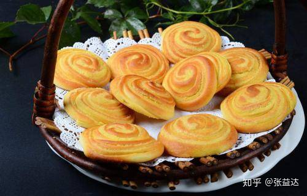
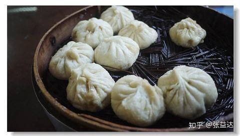
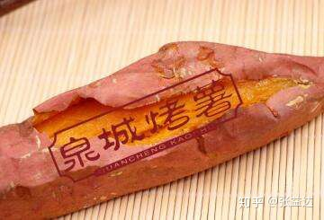
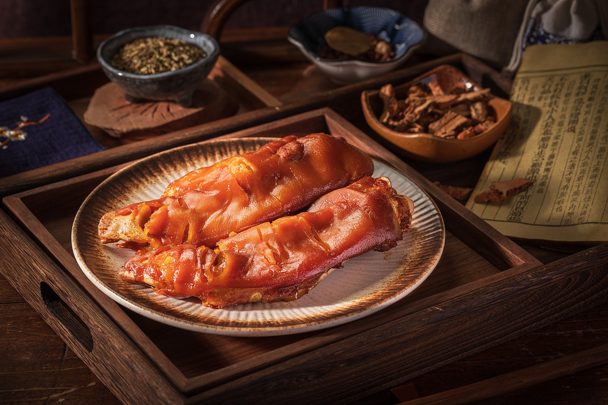

关于济南美食
“必须要尝”
油旋

油旋是一种旋涡状葱油小饼，刚出炉的油旋色泽金黄，内软外酥，葱香扑鼻。油旋最早出现在济南是清朝时期。相传油旋是清朝时期的徐氏三兄弟（今齐河县）去南方闯荡时在南京学来的，油旋在南方的口味是甜的，徐氏兄弟来济南后依据北方人的饮食特点将油旋的口味改成咸香味，一直传承至今。
草包包子铺

恐怕多数济南人都熟悉的一家店，他家的包子承载了几代老济南人的记忆呢。
皮薄、馅多、味美、灌汤，最有济南味儿的是用荷叶包着，这样不仅不会粘底儿，包子中还飘散着荷叶的清香。一斤大约35-40元，价位适中。除了包子外，传统鲁菜，如九转大肠也是可以吃到的 。值得推荐！
泉城烤薯

传说山东烤地瓜源于济南，济南烤地瓜则源于平阴还与乾隆皇帝有一定的渊源，当年乾隆皇帝在平阴连食平阴烤地瓜治好了其多年连太医屡治无效的便秘便派平阴烤地瓜能手带平阴鲜地瓜到北京皇宫烤地瓜，专供后宫皇帝滨妃们食用，从此平阴鲜地瓜成为御供地瓜。最近逛街突然发现的一家烤红薯店，味道还不错 烤的挺有花样 在花园路与历山路交叉口恒展大厦下面。
特色小吃
“一座城市的烟火与生活”
甜沫 甜沫是济南最有名气的小吃，泉城二怪之一，是一种以小米面为主熬煮的咸粥，济南人又俗称之为“五香甜沫”。在济南的众多小吃中，甜沫是最具特色的“招牌”名优小吃。济南的甜沫以甜沫唐最为出名。

鲁味斋 鲁味斋酱猪蹄酱红琥珀色、核桃肉皮状的扒蹄油亮鲜嫩，清香扑鼻。肉味的腥腻之气已消失殆尽，取而代之的是内涵十足的“卤制秘方”独有的香味，却也不“喧宾夺主”，依然保留了最为自然的原始味道。忍不住咬一口下去，皮糯肉烂，老少皆宜。
Welcome everyone to Jinan to taste the food and enjoy the natural scenery.